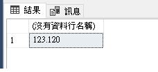
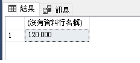
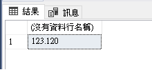
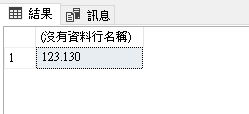

前言
SQL 內建函數有多種，而最常使用的四大函數分別為聚合函數（Aggregate Functions）& 字串函數（String Functions）& 數值函數（Mathematical Functions）& 日期函數（Date and Time Functions）。
正文
數值函數主要用於數值處理或計算，雖然聚合函數也是處理數值，但整體看起來的使用上還是不同的，數值函數比較偏向於複雜的運算，直接來看會比較有感。
下列為 SQL Server 2019 提供的數值函數，這裡不會全部做介紹，特意分類為會介紹與不會介紹兩個標題。
| 本文會介紹 | 不會介紹 | ||
|---|---|---|---|
| ABS | LOG | SIN | ASIN |
| ROUND | LOG10 | COS | ACOS |
| FLOOR | SQRT | TAN | COT |
| CEILING | POWER | ATAN | ATN2 |
| SIGN | SQUARE | DEGREES | RADIANS |
| PI | EXP | RAND |
ABS
取得指定數值的絕對值，零的絕對值還是零
📕 語法：ABS(num)
回傳 10 & -10 的絕對值 SELECT ABS(10) AS '10' , ABS(-10) AS '-10'
ROUND
對指定的數值四捨五入，指定的長度來決定四捨五入到第幾位，特別注意的是，若要被捨棄的數值為 5，則會依照前一位數為奇數或偶數來決定捨入後的結果，通常奇數為捨去，偶數為進位。
📕 語法：ROUND(num, p)
四捨五入到小數第二位
SELECT ROUND(123.123, 2)四捨五入到十位數
SELECT ROUND(123.123, -1)當數值為5，前一位數為奇數，四捨五入到小數第二位
SELECT ROUND(123.115, 2)當數值為5，前一位數為偶數，四捨五入到小數第二位
SELECT ROUND(123.125, 2)
FLOOR
返回指定數值的最大整數（官方上是寫最大，但我運出來的結果是最小，貌似是 float 是近似值的關係…）
📕 語法：FLOOR(num)
取得 123.123 及 -123.123 的最大整數 SELECT FLOOR(123.123) AS '123.123', FLOOR(-123.123) AS '-123.123'
CEILING
返回指定數值的最小整數（官方上是寫最小，但我運出來的結果是最大，貌似是 float 是近似值的關係…）
📕 語法：CEILING(num)
取得 123.123 及 -123.123 的最小整數 SELECT FLOOR(123.123) AS '123.123', FLOOR(-123.123) AS '-123.123'
SIGN
對指定數值或運算式的結果返回 1（正數） 或 0 或 -1（負數）
📕 語法：SIGN(num)
取得 123 & -123 & 123-123 返回的結果
1 | SELECT |
LOG
返回指定數值的自然對數，base 為基底數，base 可用可不用
📕 語法：LOG(num, base)
取得 10 的自然對數 & 10 以 10 為底的自然對數 SELECT LOG(10), LOG(10,10)
LOG10
返回指定數值以 10 為底的對數，如果基底為 10 使用該函數就更方便。（小迷思：MySQL 有提供 LOG2 函數，MSSQL 是沒有低）
📕 語法：LOG(num)
取得數值 123 以 10 為底的對數 SELECT LOG10(123)
SQRT
返回指定數值的平方根
📕 語法：SQRT(num)
取得 100 & 123 的平方根 SELECT SQRT(100) AS '100', SQRT(123) AS '123'
POWER
返回指定數值的 N 次方
📕 語法：POWER(num, n)
取得 10 的平方及 10 的立方 SELECT POWER(10, 2), POWER(10, 3)
SQUARE
返回指定數值的平方
:closed_book: 語法：SQUARE(num) SELECT SQUARE(10), SQUARE(10.1)
PI
回傳 π 的值
📕 語法：PI()
SELECT PI()
結語
三角函數平常使用上較少，不做特別介紹，相關使用方法請洽官網。